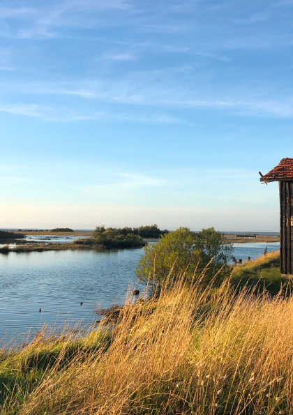
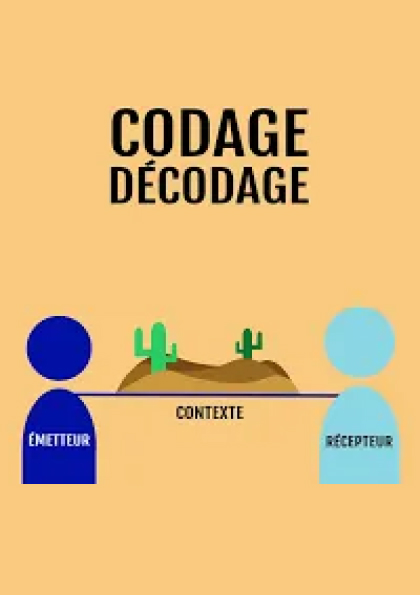
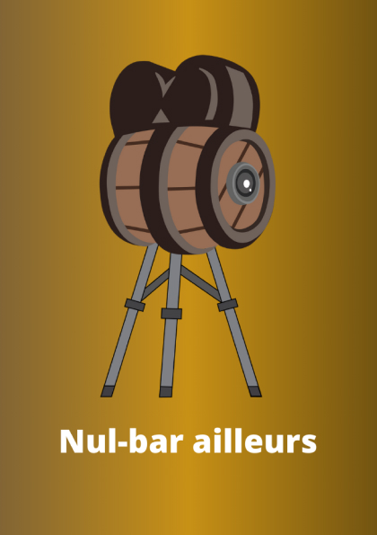
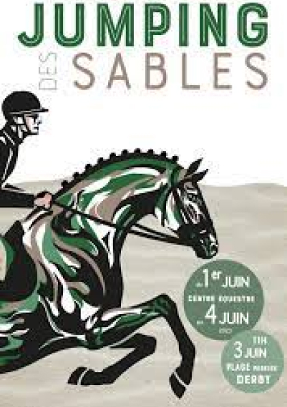
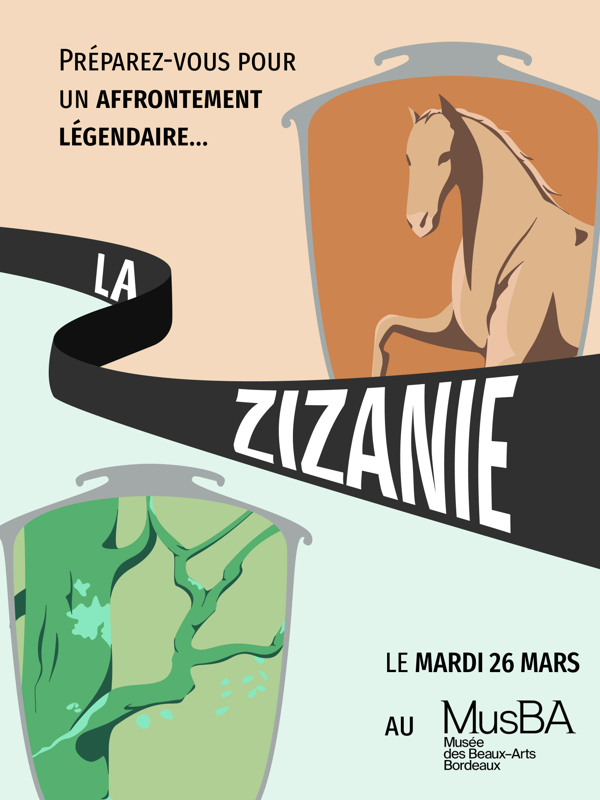
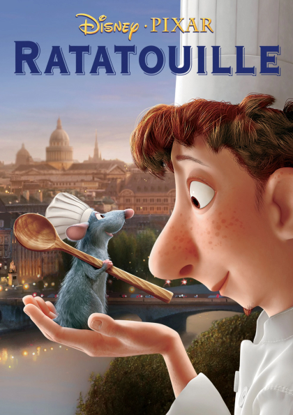
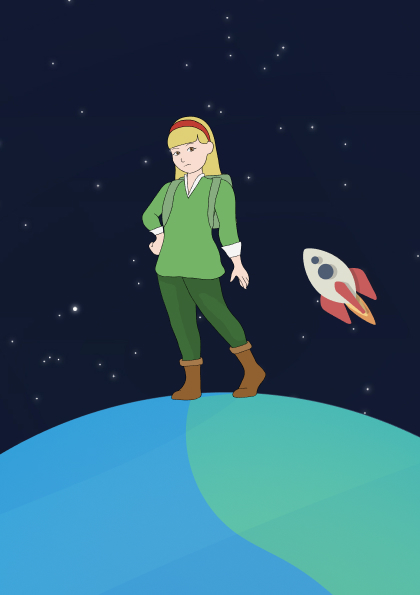

Explorez mon univers dans l'audiovisuel, où se marient harmonieusement l'art visuel et la magie de la narration. La création d'images, de vidéos et de son n'est pas simplement un souvenir lointain, mais une passion ardente qui m'anime à chaque instant. Cette section regroupe l'ensemble de mes expériences où je tiens la caméra, capturant ainsi des moments uniques et inspirants. Pour moi, la vidéo est bien plus qu'une simple activité ; c'est une source inépuisable de créativité et d'émotion.
Court métrage sur le thème des films de monstres. Nous avons réalisé un scénario autour d’un pitch donné "Après avoir mené une longue quête, l'objet est enfin à leur portée. Mais ce n'est pas du tout ce qu'elles s'étaient imaginé." Après l’écriture du storyboard, nous avons réalisé le tournage sur deux jours avec prise de son, cadrage et jeu d’acteurs. Nous avons également dérusher les plans et effectué le montage du court-métrage. J'ai pu approfondir mes connaissances sur le mixage du son et découvrir une nouvelle technique de cadrage.

Un compte Instagram et TikTok sur les paysages et événements du Bassin d’Arcachon. C’est un projet personnel qui relie mes deux passions, l’audiovisuel et le Bassin d’Arcachon, afin de montrer l’amour de la nature et des événements de la région. Sur ce compte, on trouve principalement de courtes vidéos sur Instagram et TikTok, ainsi que quelques photos de paysages sur Instagram. Il permet d’exprimer ma créativité visuelle et de m’amuser en dehors de mes études.
Première fois que je réalise un motion design sur une théorie appelée "Codage et décodage". L'objectif est de simplifier cette théorie pour la rendre accessible à tous, en utilisant des designs simples et des animations claires et précises. Ce motion a été réalisé en deux étapes : la première partie consistait à créer les animations tout au long du motion, puis dans un second temps, à réaliser le son en ajoutant une voix off simple et compréhensible, ainsi que des éléments de sound design pour donner du rythme à la vidéo.
Première émission pilote réalisée sur le thème de l’alcool, plus particulièrement pour le premier épisode, nous nous sommes concentrés sur la bière. Nous avons exploré le processus de fabrication de la bière et nous sommes informés sur un marché en expansion. Cette émission a une durée d’une quinzaine de minutes, permettant d'approfondir le sujet et d'obtenir l'avis d'experts sur la fabrication des bières artisanales. En ce qui concerne ce projet, nous avons également géré la communication autour de cette émission pilote et suivi les étapes de production d'une véritable émission, en passant par la création d'un décor de plateau, le tournage avec la prise de son, et le montage en choisissant les bons plans.
Dans le cadre de mon stage à la Télévision du Bassin d’Arcachon, j'ai eu l'opportunité de couvrir un événement sur plusieurs jours. J'ai rencontré les organisateurs de l'événement afin qu'ils nous expliquent en quoi consiste cet événement et comment il se déroule. De plus, j'ai interviewé les cavaliers à la sortie de leurs épreuves pour recueillir leurs impressions. Tout au long de cette expérience, j'ai réalisé des plans de coupe illustrant les personnes interviewées et je me suis plongé dans l'univers des concours équestres.
Nous avons eu la chance de participer à la soirée de la Bacchanight au musée des Beaux-Arts de Bordeaux pour présenter le projet "La Zizanie". Ce projet est né d'une rivalité dans la salle Paysage et Peinture Animalière, visant à déterminer quelle équipe, Animaux ou Paysage, occupait une place plus importante dans cette salle. Pour départager les deux équipes, les joueurs devaient défendre leur équipe de choix en répondant à des questions interactives sur les tableaux de la salle. Chaque bonne réponse rapportait des points pour l'équipe. À la fin de chaque participation, le joueur récupérait un badge qu'il pouvait porter fièrement pour représenter son équipe. À la clôture de la soirée, l'équipe victorieuse du duel "La Zizanie" s'est avérée être l'équipe PAYSAGE, totalisant 19 430 points contre 17 695 pour l'équipe Animaux. Cependant, l'équipe Animaux n'a pas démérité pour autant. Au cours de la soirée, nous avons enregistré environ 200 participations sur les 1600 personnes présentes.
Un projet exclusivement axé sur le sound design du célèbre film Ratatouille. Nous avons réalisé manuellement tous les bruitages pour nous rapprocher au maximum de la réalité de chaque séquence du film. Ensuite, nous avons assemblé les sound design avec les séquences du film à l'aide de Premiere Pro afin d'obtenir un résultat très fidèle à la réalité.
Un projet réalisé dans le cadre du hackathon de Reboot, axé sur des projets responsables et innovants sur le web. La Petite Astronaute est née sur une planète où la surconsommation est monnaie courante, soulevant ainsi une grande question autour de l'empreinte écologique à laquelle nous sommes de plus en plus confrontés aujourd'hui. Il s'agit d'un site internet interactif qui retrace l'histoire de la Petite Astronaute sur différentes planètes, illustrant ainsi les divers aspects de la surconsommation à travers une série d'histoires audio et de sound design spécifiques à chaque planète. Ces récits sont rédigés dans un style similaire à celui du Petit Prince. Cette solution a été sélectionnée dans la catégorie créativité lors du hackathon.
06.01.49.00.40
amelieperrot33@gmail.com
Bassin d'Arcachon et Bordeaux